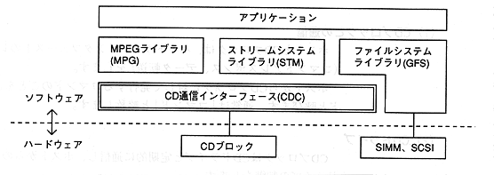

Table 1.1 CD block functional classification
Classification |
|---|
∙ CD block functions can be used with a common software interface through the CD communication interface.

英 Alphabetic symbols that represent libraries, such as CDC, are called library symbols.
In this document, the CD communication interface may be abbreviated as “CDC”.